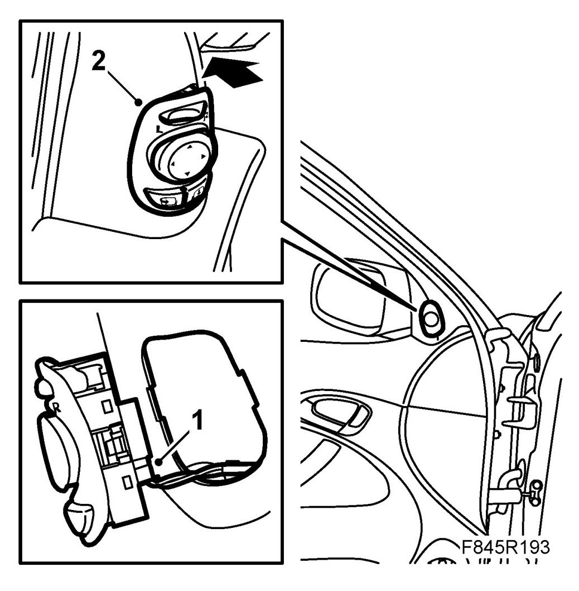

Power Mirror Switch: Service and Repair
Door Mirror, Switch
To remove
1. Remove the switch using 82 93 474 Removal tool.
NOTE: The switch may be glued in place (low VIN) which can make removal more difficult.
2. Unplug the connector.
To fit
1. Remove any remains of adhesive. Plug in the switch.

2. Fit the switch by angling in the side facing the driver first. Check that the clip has engaged.
3. Check that the switch works.